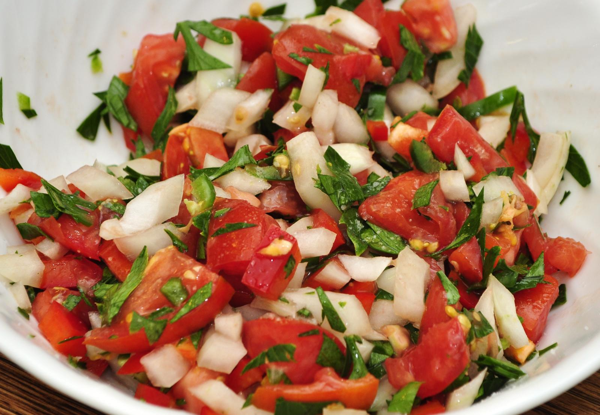

Pico de Gallo

Ingredients
- 2 tomatoes (2 cups diced)
- 1/2 white onion (1 cup diced)
- 1 jalepeño
- 1 lime
- 1/4 cup chopped cilantro
- 1/4 tsp salt
Directions
- Finely dice the tomato and onion. Remove the stem and seeds from the jalapeño, then finely dice. Finely chop the cilantro. Add the tomato, onion, and cilantro to a bowl.
- Squeeze the juice of half the lime over the vegetables in the bowl (about 1 Tbsp). Add a pinch or two of salt, and stir everything to combine. Taste the mixture and add more salt or lime juice to your liking. Allow the salsa to sit for five minutes before serving. Serve immediately, or refrigerate for up to three days.
Home